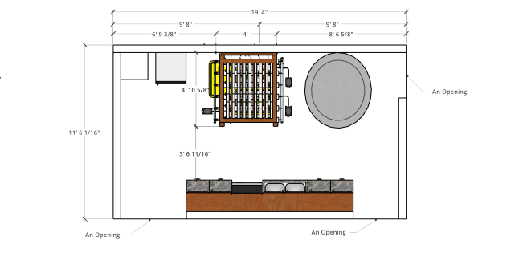

One System, One Garden
Designed at-home soiless growing systems and accessible gardens.
Summary
Purpose
The purpose of this case study is to introduce the possibilities of soilless growing systems within small spaces at home. What begins as a simple neighborhood observation can evolve into something accessible and healthier, while also fostering opportunities for community-building and collaboration. This approach brings us one step closer to a closed-loop food system—one garden and one system at a time.
Problem
Food insecurity is a systemic issue that can happen to anyone, and has been on the rise in recent years. It is a result of a number of social, economic, and environmental factors including: poverty, unemployment/ underemployment, lack of access to affordable/ nutritious food etc. Ultimately, this has an effect on one’s overall well-being as the consumption of adequate food supply is a necessity for all beings.
Role
- Web Developer
- Project Manager
- Product Designer
Project Overview
Background Context
In my neighborhood, Woodside, Queens, 9.3% of the population experienced food insecurity in 2023. Many residents turn to churches, food pantries, or food distribution centers to access daily meals. These centers distribute a variety of items, ranging from grains to canned goods to packaged meats. Most of these services are offered throughout the week and help alleviate food challenges people may face.
Reasoning
While these services help serve communities and are better than the absence of food, I noticed that there is a lack of fresh fruits and vegetables from these distributions. That can be a result of a variety of factors, such as not enough supply, economic support etc.
Project Timeline & Budget
We were given a $500 budget that will cover all the build and maintenance needed for these hydroponic systems. The following are the project phases that tracks the progress of my project from start to finish.
Phase 1 - text TBA
Phase 2 - text TBA
Phase 3 - text TBA
Phase 4 - text TBA
Needs Assessment
The Needs Assessment is taken before the build of the hydroponic system where we evaluate and identify the essential requirements needed to create an effective growing environment. As shown in the assessment, these requirements include space consideration, lighting, water source & quality, environmental control, growing medium, plant selection/ system design, and finally maintenance planning.
Farming Planning Assessment
The Farm Planning Assessment is taken before the build of the hydroponic system where we choose our desired crops and identify its important growing conditions, additional growing details, light requirements, and grow area information. These growing conditions include: the ideal pH, the ideal EC, and relative humidity etc. The additional growing details include the different stages of the plant growth from germination to harvest and what extra steps may need to be taken for optimal growth during these stages. Moreover, the light requirements tell us the ideal Photosynthetic Photon Flux Density (PPFD), distance from the light, among others. Lastly, the grow area information is documenting the existing site conditions or things to consider when designing our system.
Recommendations
There are a number of factors that should be considered when developing a recommendation for using hydroponic systems. These include:
1 - What kind of crops are being grown? These can be microgreens, leafy crops, herbs, or specialty crops and each requires different PH, EC levels etc.
I will be growing a perennial fruit crop, strawberries and a leafy green crop, spinach.
2 - How much time can you commit for maintenance? Complex systems require more maintenance than simple systems.
For the future build, I hope I can commit at least 2 hrs a week for maintenance.
3 - What is your tolerance for equipment failure? The tolerance for equipment failure is also another factor as systems that require pumps or sprayers are more likely to fail.
I will try my best cleaning and maintaining the system within the given environmental conditions. However, if it does all come to having to repurchase new equipment or materials, I’ll stay within budget for purchasing.
4 - What is your budget for equipment and systems building?
My budget for equipment and systems building is $500.
5 - How big is your farm? How much do you plan to produce? Some take less space for the same amount of production or can be fit into otherwise unusable spaces.
My farm system will only take the amount of grow area space as listed on my Farm Planning Template and the ideal vision is to produce enough strawberries and spinach to feed about a family of 3-4 people.
6 - Where is your farm? How is the local climate? Indoor farm v.s. Outdoor farms. How to deal with the cold weather.
My farm is located indoors in New York City. The climate here is humid subtropical with 4 distinct seasons. However, since my farm system is located indoors, I would have to account for the conditions indoors that work with the existing climate.
After consideration of these factors, I will be growing Alpine strawberries in my Deep Water Culture (DWC) system and Bloomsdale spinach in my Nutrient Film Technique(NFT) system. As these two crops are among the lower maintenance groups and these two systems are one of the more simple starter systems, I will be able to dedicate some time for maintenance of these systems at home. Since this is an indoor system the climate wouldn’t be of importance as much. Lastly, these two systems should have a budget of $500 for equipment and systems building.
Contributing Factors to the Issue
The lack of fresh fruits and vegetables from food pantries etc. can result from a number of factors and are not always something that we have control of. For one, as these food distribution services most likely rely on donations and have budget constraints, it can be quite costly to regularly supply fresh produce than non-perishable foods. Additionally, fresh produce requires proper storage to maintain its quality. Lastly, there may be concerns over transportation and other logistics where having access to supply chains can be of difficulty.
Strengths
- Convenient water access point (within 5 feet there is normal tap water)
- Upstairs there is access to Reverse Osmosis filtered water system
- No nearby electrical/ biological hazards
- Sufficient walking space to/ from/ and in the proposed growing area
- Consistent wifi access
- Nearby power source (8ft or less)
- Nearby storage space for nutrients, materials, testing equipment
- Not much foot traffic to and from
Weaknesses
- Not near any big windows so only artificial
- 4 - 8 hours of natural sunlight access
- 8+ natural sunlight access
- There are some instances of pests and rodents during the winter time
- There may be other appliances nearby
Materials List
The Materials List consists of a $500 budget that covers both the build and the maintenance of the system. This shows us how affordable our system can be and also gives us an understanding how to stay within the given budget. I’ve looked at a combination of small businesses and bigger companies such as Amazon and Home Depot in my findings.
Concepts
This course has shown me how a small observation in my community can spark new possibilities. In this case study, the focus on health and well-being has inspired my system’s design, balancing simplicity with complexity. Throughout the program, I also recognized the importance of empathy in community-building—how small actions foster connections that extend beyond the immediate. Lastly, the site visits that supported our learning have given me more confidence in growing crops of my own.
Project Plan
The Project Plan consists of all the necessary tasks needed to complete our final project. The main tasks are then broken down into smaller manageable subtasks that keep track of our progress. This helps with progress check-in’s and time management.
Challenges
During the implementation of my project some challenges that I faced was that my initial site/ grow area was in a vast open green space in my neighborhood. Upon further planning and designing a system, I realized the scale of my project that it was heading towards, which was not as ideal for my concept at the moment. For one, it would be difficult to build and maintain within the budget and daily access to and from the space/ property may be challenging as well.
Solutions
I resolved this challenge by re-evaluating my design choices and the bigger picture and decided that starting out at the home-scale for now would be the best idea. I thought about the goods being distributed at these pantries etc. and the weight that it carries. So home-growing crops can help alleviate that weight to an extent. Therefore, I then took a look around my own home to figure out a system in the making as part of this case study and can hopefully inspire others to do the same.
Visual Data
For my DWC system, I will be growing four Alpine strawberry crops, held in net pots—two in each 7-gallon water reservoir. The net pots will consist of the Alpine Strawberry seeds in the rockwool, a growing medium that supports plant growth. The plant roots, after the germination stage, will be submerged in nutrient-rich water inside the reservoir. Additionally, to provide the necessary oxygen, an airstone connected to an air pump will oxygenate the water. Lastly, above the setup, LED light strips will serve as a substitute for natural light, another crucial element for plant growth.
Above the DWC system is the NFT system, where I will be growing Bloomsdale spinach crops. These will also be placed in net pots with rockwool, but they will be submerged in an NFT channel. Each channel holds a thin film of nutrient-rich water, which the plant roots absorb. Nutrients circulate through the system, flowing into the grow channel, and any unused nutrients return to the water reservoir, completing the cycle. This process uses an air pump, airstone, water pump, irrigation lines, and PVC pipes. Lastly, as with the DWC system, the NFT system will also require artificial LED lighting for this system build.


Standard Operating Procedure (SOP)
The Standard Operating Procedure summarizes the system build and how it operates daily. In addition, I’ve outlined the different procedures to take during each stage of the grow cycle for the Alpine Strawberries and Bloomsdale Spinach. These stages include the Seedling/ Germination, Transplanting, Maintenance, and Harvesting. Lastly, I’ve also outlined a daily, monthly, and half-year cleaning/ maintenance schedule for both DWC and NFT systems.
Conclusion
In summary, I would like to adapt my system into something simpler in terms of both build and maintenance. I am fortunate to have a relatively large space for my project, but I want to explore a smaller-scale design that can rejuvenate outdoor spaces or even brighten a corner space of an interior setting. In addition, to develop a system with a budget of $250. While this system is feasible, it’s crucial to understand the fundamental concepts of at-home growing systems prior build. In this case study, both the DWC and NFT systems are relatively simple hydroponic methods, but there are important details to ensure they operate as smoothly as possible. Overall, this study has not only expanded my knowledge of the current food system but has also highlighted how we can advocate for justice within it. I have gained a deeper understanding of my role as a designer in today's context, from neighborhood observation to transforming the food system into one that is accessible, healthier, and fosters community-building and collaboration—one system, one garden at a time.
Check out my other case studies!